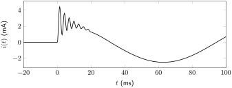

\begin{align*}
i(t) \amp= C\frac{dv(t)}{dt}\\
I(s) \amp= C\left[sV(s) - v(0)\right]\\
\amp= sCV(s) - Cv(0)\\
V(s) \amp= \frac{1}{sC}I(s) + \frac{v(0)}{s}
\end{align*}
Section 11.3 \(s\)-Domain Analysis
It is possible to fully analyze a circuit in the \(s\)-domain and use the inverse Laplace transform to derive a time-domain function. While this is not always easier than a differential equation analysis, it is frequently more convenient, especially when the equation is non-constant input non-homogeneous or when the circuit is higher than second order.
To perform an \(s\)-domain analysis, transform each individual circuit component into the s domain. This is similar to phasor analysis, with the notable difference being that \(s\)-domain analysis includes initial conditions in the circuit transformation. Once all circuit elements are transformed into the \(s\)-domain, perform any circuit analysis technique to obtain an equation for \(V(s)\) or \(I(s)\text{.}\) Then perform an inverse Laplace transform to obtain a time-domain expression.
Subsection 11.3.1 Resistor
The voltage and current properties of a resistor are defined by Ohm’s law: (2.4.1). Converting to the \(s\)-domain, the relationship between voltage and current becomes that defined in (11.3.1).
\begin{equation}
V(s) = RI(s)\tag{11.3.1}
\end{equation}
Therefore, in the \(s\)-domain, a resistor is expressed simply as a resistor. This transform is depicted in Figure 11.3.1.
Subsection 11.3.2 Capacitor
The voltage and current properties of a capacitor are defined in (5.3.1). In the \(s\)-domain, this corresponds to the relationship shown in (11.3.2) (where \(v(0)\) is equal to the initial voltage dropped over the capacitor at \(t=0\)) and derived in Derivation 11.3.2.1.
\begin{equation}
V(s) = \frac{1}{sC}I(s) + \frac{v(0)}{s}\tag{11.3.2}
\end{equation}
Derivation.
Therefore, in the s domain, a capacitor is expressed as a capacitor (with impedance of \((sC)^{-1}\)) in series with a voltage source corresponding to the initial voltage drop over the capacitor. This transform is depicted in Figure 11.3.2.
Subsection 11.3.3 Inductor
The voltage and current properties of an inductor are defined in (6.3.1). In the \(s\)-domain, this corresponds to the relationship shown in (11.3.3) (where \(i(0)\) is equal to the initial current through the inductor at \(t=0\)) and derived in Derivation 11.3.3.1.
\begin{equation}
I(s) = \frac{1}{sL}V(s) + \frac{i(0)}{s}\tag{11.3.3}
\end{equation}
Derivation.
\begin{align*}
v(t) \amp= L\frac{di(t)}{dt}\\
V(s) \amp= L\left[sI(s) - i(0)\right]\\
\amp= sLI(s) - Li(0)\\
I(s) \amp= \frac{1}{sL}V(s) + \frac{i(0)}{s}
\end{align*}
Therefore, in the \(s\)-domain, an inductor is expressed as an inductor (with impedance of \(sL\)) in parallel with a current source corresponding to the initial current through the inductor. This transform is depicted in Figure 11.3.3.
Subsection 11.3.4 Switched Sources
Frequently, to demonstrate a change in a circuit leading to a transient response, a source will be connected to a circuit via an opening or closing switch.
Sources connected via an opening switch (that are disconnected from the steady-state response of the circuit) contribute to initial conditions that are included in the \(s\)-domain model of a capacitor (Figure 11.3.2) and inductor (Figure 11.3.3). These need to be consulted in the initial analysis of the circuit to calculate \(v(0)\) and/or \(i(0)\text{,}\) as needed.
Sources that are connected via a closing switch do not contribute to the initial conditions, but do contribute to the transient and/or steady-state response. Therefore, a source connected via a closing switch can be represented as \(v(t)~u(t)\) or \(i(t)~u(t)\text{.}\) When transformed into the \(s\)-domain, this becomes \(V(s)/s\) or \(I(s)/s\text{.}\) This transformation is depicted in Figure 11.3.4 for a voltage source.
Example 11.3.5 First-order circuit \(s\)-domain analysis.
Calculate \(V(s)\) for the circuit given below, and then use the inverse Laplace transform to derive an equation for \(v(t)\text{.}\)

Calculate the initial value of the voltage drop over the capacitor (\(v(0)\)). Only \(V_{S2}\) is connected to the capacitor at this time. The capacitor can be replaced by an open in this DC steady-state condition.
\begin{equation*}
v(0) = V_{S2}
\end{equation*}
Transform the circuit into the \(s\)-domain.

Perform KCL at the node between all three resistors and the capacitor. Group like terms and normalize to derive \(V(s)\text{.}\)
\begin{align*}
\frac{\frac{V_{S1}}{s}-V(s)}{R_1} \amp= \frac{V(s)}{R_2} + \frac{V(s) - \frac{v(0)}{s}}{\frac{1}{sC}} + \frac{V(s) - \frac{V_{S2}}{s}}{R_3}\\
\frac{V_{S1}}{sR_1} \amp= \frac{V(s)}{R_1} + \frac{V(s)}{R_2} + sCV(s) - \frac{sCv(0)}{s} + \frac{V(s)}{R_3} - \frac{V_{S2}}{sR_3}\\
\frac{V_{S1}}{sR_1} + \frac{V_{S2}}{sR_3} + \frac{sCv(0)}{s} \amp= sCV(s) + \left[\frac{1}{R_1} + \frac{1}{R_2} + \frac{1}{R_3}\right]V(s)\\
\frac{1}{s}\left[sv(0) + \frac{R_3V_{S1}+R_1V_{S2}}{CR_1R_3}\right] \amp= sV(s) + \left[\frac{1}{CR_1} + \frac{1}{CR_2} + \frac{1}{CR_3}\right]V(s)\\
V(s) \amp= \frac{sv(0) + \frac{R_3V_{S1}+R_1V_{S2}}{CR_1R_3}}{s\left(s + \left[\frac{1}{CR_1} + \frac{1}{CR_2} + \frac{1}{CR_3}\right]\right)}
\end{align*}
The parameter values are: \(V_{S1} = 5~\textrm{V}\text{,}\) \(V_{S2} = 10~\textrm{V}\text{,}\) \(C = 40~\mu\textrm{F}\text{,}\) \(R_1 = 5~\Omega\text{,}\) \(R_2 = 10~\Omega\text{,}\) and \(R_3 = 10~\Omega\text{.}\) Derive a numeric expression for \(V(s)\text{.}\)
\begin{align*}
V(s) \amp= \frac{10s + 50000}{s\left(s + 10000\right)}\\
\amp= \frac{K_1}{s} + \frac{K_2}{s+10000}
\end{align*}
Perform a partial fraction expansion to calculate the coefficients.
To calculate coefficient \(K_1\text{,}\) multiply both sides of the equation by \((s)\) and solve at \(s=0\text{.}\)
\begin{align*}
\frac{(10s + 50000)(s)}{s(s + 10000)}\Big|_{s=0} \amp= \frac{K_1(s)}{s}\Big|_{s=0} + \frac{K_2(s)}{s+10000}\Big|_{s=0}\\
\frac{10s + 50000}{s + 10000}\Big|_{s=0} \amp= K_1\Big|_{s=0} + \frac{K_2(s)}{s+10000}\Big|_{s=0}\\
\frac{10(0) + 50000}{(0) + 10000} \amp= K_1 + \frac{K_2(0)}{(0)+10000}\\
\frac{50000}{10000} \amp= K_1 + 0\\
K_1 \amp= 5~\textrm{V}
\end{align*}
To calculate coefficient \(K_2\text{,}\) multiply both sides of the equation by \((s+10000)\) and solve at \(s=-10000\text{.}\)
\begin{align*}
\frac{(10s + 50000)(s+10000)}{s(s + 10000)}\Big|_{s=-10000} \amp= \frac{K_1(s+10000)}{s}\Big|_{s=-10000} + \frac{K_2(s+10000)}{s+10000}\Big|_{s=-10000}\\
\frac{10s + 50000}{s}\Big|_{s=-10000} \amp= \frac{K_1(s+10000)}{s}\Big|_{s=-10000} + K_2\Big|_{s=-10000}\\
\frac{10(-10000) + 50000}{(-10000)} \amp= \frac{K_1((-10000)+10000)}{(-10000)} + K_2\\
\frac{-50000}{-10000} \amp= \frac{K_1(0)}{(-10000)} + K_2\\
K_2 \amp= 5~\textrm{V}
\end{align*}
The expanded version of \(V(s)\) is given below.
\begin{equation*}
V(s) = \frac{5}{s} + \frac{5}{s+10000}
\end{equation*}
Consult Table 11.1.1 to derive the time-domain function.
\begin{equation*}
v(t) = \left[5~\textrm{V} + 5~\textrm{V}~\textrm{e}^{-10000t}\right]~u(t)
\end{equation*}
Example 11.3.9 Second-order circuit \(s\)-domain analysis, symbolic.
Calculate \(V(s)\) for the circuit given below.
Calculate the initial conditions (\(i(0)\) and \(v(0)\)) of the circuit. The capacitor can be replaced by an open and the inductor can be replaced by a short.
\begin{align*}
v(0) \amp= 0\\
i(0) \amp= \frac{V_{DC}}{R_1}
\end{align*}
Transform the circuit into the \(s\)-domain.
Perform KCL. Group like terms and normalize to derive \(V(s)\text{.}\)
\begin{align*}
\frac{-i(0)}{s} \amp= \frac{V(s)}{sL} + \frac{V(s)}{R_2+\frac{1}{sC}}\\
\frac{-i(0)}{s}\left[R_2+\frac{1}{sC}\right] \amp= \frac{V(s)}{sL}\left[R_2+\frac{1}{sC}\right] + V(s)\\
\frac{-R_2i(0)}{s} - \frac{i(0)}{s^2C} \amp= \frac{R_2}{sL}V(s) + \frac{1}{s^2LC}V(s) + V(s)\\
-sR_2i(0) - \frac{i(0)}{C} \amp= s^2V(s) + \frac{R_2}{L}sV(s) + \frac{1}{LC}V(s)\\
V(s) \amp= \frac{-R_2i(0)s - \frac{i(0)}{C}}{s^2 + \frac{R_2}{L}s + \frac{1}{LC}}
\end{align*}
Example 11.3.13 Second-order circuit \(s\)-domain analysis, numeric.
Calculate \(I(s)\) for the circuit given below, and then use the inverse Laplace transform to derive an equation for \(i(t)\text{.}\)

The initial conditions are zero, as no source is connected before the switch closes. Transform the circuit into the \(s\)-domain.
Perform KCL at the node connecting \(R_1\text{,}\) \(C\text{,}\) and \(L\text{.}\) Group like terms and normalize to derive \(I(s)\text{.}\)
\begin{align*}
\frac{\frac{V_ms}{s^2+\omega^2}-V_X}{R_1} \amp= sCV_X + I(s)\\
\frac{V_ms}{R_1(s^2+\omega^2)} \amp= \frac{V_X}{R_1} + sCV_X + I(s)\\
V_X \amp= sLI(s) + R_2I(s)\\
\frac{V_ms}{R_1(s^2+\omega^2)} \amp= frac{1}{R_1}\left[sLI(s) + R_2I(s)\right] + sC\left[sLI(s) + R_2I(s)\right] + I(s)\\
\amp= LCs^2I(s) + \left[\frac{L}{R_1} + CR_2\right]sI(s) + \left[\frac{R_2}{R_1}+1\right]I(s)\\
\frac{V_ms}{LCR_1(s^2+\omega^2)} \amp= s^2I(s) + \left[\frac{1}{CR_1} + \frac{R_2}{L}\right]sI(s) + \left[\frac{R_1+R_2}{LCR_1}\right]I(s)\\
I(s) \amp= \frac{\frac{V_ms}{LCR_1}}{(s^2+\omega^2)\left(s^2+\left[\frac{1}{CR_1} + \frac{R_2}{L}\right]s+\left[\frac{R_1+R_2}{LCR_1}\right]\right)}
\end{align*}
The parameter values are: \(Vm = 0.5~\textrm{V}\text{,}\) \(\omega = 50~\textrm{rad/s}\text{,}\) \(R_1 = 200~\Omega\text{,}\) \(R_2 = 1~\Omega\text{,}\) \(C = 50~\mu\textrm{F}\text{,}\) and \(L = 4~\textrm{mH}\text{.}\) Derive a numeric expression for \(I(s)\text{.}\)
\begin{align*}
I(s) \amp= \frac{12500s}{(s^2+2500)(s^2+350s+5025000)}\\
\amp= \frac{K_1}{s+j50} + \frac{K_2}{s-j50} + \frac{K_3}{s+175+j2234.8} + \frac{K_4}{s+175-j2234.8}
\end{align*}
Perform a partial fraction expansion to calculate the coefficients.
To calculate \(K_1\text{,}\) multiply both sides of the equation by \((s+j50)\) and solve at \(s=-j50\text{.}\)
\begin{align*}
\frac{(12500s)(s+j50)}{(s+j50)(s-j50)(s^2+350s+5025000)}\Big|_{s=-j50} \amp= \frac{K_1(s+j50)}{s+j50}\Big|_{s=-j50} + \frac{K_2(s+j50)}{s-j50}\Big|_{s=-j50} + \frac{K_3(s+j50)}{s+175+j2234.8}\Big|_{s=-j50} + \frac{K_4(s+j50)}{s+175-j2234.8}\Big|_{s=-j50}\\
\frac{12500s}{(s-j50)(s^2+350s+5025000)}\Big|_{s=-j50} \amp= K_1\Big|_{s=-j50} + \frac{K_2(s+j50)}{s-j50}\Big|_{s=-j50} + \frac{K_3(s+j50)}{s+175+j2234.8}\Big|_{s=-j50} + \frac{K_4(s+j50)}{s+175-j2234.8}\Big|_{s=-j50}\\
\frac{12500(-j50)}{((-j50)-j50)((-j50)^2+350(-j50)+5025000)} \amp= K_1 + \frac{K_2((-j50)+j50)}{(-j50)-j50} + \frac{K_3((-j50)+j50)}{(-j50)+175+j2234.8} + \frac{K_4((-j50)+j50)}{(-j50)+175-j2234.8}\\
\frac{-j625000}{-1750000-j502250000} \amp= K_1 + \frac{K_2(0)}{-j100} + \frac{K_3(0)}{175+j2184.8} + \frac{K_4(0)}{175-j2284.8}\\
K_1 \amp= 0.001244 + j0.0000043~\textrm{A}\\
\amp= 1.24 + j0.0043~\textrm{mA}
\end{align*}
\(K_2\) is the complex conjugate of \(K_1\text{.}\)
\begin{equation*}
K_2 = 1.24 - j0.0043~\textrm{mA}
\end{equation*}
To calculate \(K_3\text{,}\) multiply both sides of the equation by \((s+175+j2234.8)\) and solve at \(s=-175-j2234.8\text{.}\)
\begin{align*}
\frac{(12500s)(s+175+j2234.8)}{(s^2+2500)(s+175+j2234.8)(s+175-j2234.8)}\Big|_{s=-175-j2234.8} \amp= \frac{K_1(s+175+j2234.8)}{s+j50}\Big|_{s=-175-j2234.8} + \frac{K_2(s+175+j2234.8)}{s-j50}\Big|_{s=-175-j2234.8} + \frac{K_3(s+175+j2234.8)}{s+175+j2234.8}\Big|_{s=-175-j2234.8} + \frac{K_4(s+175+j2234.8)}{s+175-j2234.8}\Big|_{s=-175-j2234.8}\\
\frac{12500s}{(s^2+2500)(s+175-j2234.8)}\Big|_{s=-175-j2234.8} \amp= \frac{K_1(s+175+j2234.8)}{s+j50}\Big|_{s=-175-j2234.8} + \frac{K_2(s+175+j2234.8)}{s-j50}\Big|_{s=-175-j2234.8} + K_3\Big|_{s=-175-j2234.8} + \frac{K_4(s+175+j2234.8)}{s+175-j2234.8}\Big|_{s=-175-j2234.8}\\
\frac{12500(-175-j2234.8)}{((-175-j2234.8)^2+2500)((-175-j2234.8)+175-j2234.8)} \amp= \frac{K_1(-175-j2234.8+175+j2234.8)}{(-175-j2234.8)+j50} + \frac{K_2((-175-j2234.8)+175+j2234.8)}{(-175-j2234.8)-j50} + K_3 + \frac{K_4((-175-j2234.8)+175+j2234.8)}{(-175-j2234.8)+175-j2234.8}\\
\frac{-2187500-j2.7935\times 10^7}{3.4960 \times 10^9 + j2.2175 \times 10^{10}} \amp= \frac{K_1(0)}{(-175-j2234.8)+j50} + \frac{K_2(0)}{(-175-j2234.8)-j50} + K_3 + \frac{K_4(0)}{(-175-j2234.8)+175-j2234.8}\\
K_3 \amp= -0.0012 - j0.0001~\textrm{A}\\
\amp= -1.2444 - j0.0975~\textrm{mA}
\end{align*}
\(K_4\) is the complex conjugate of \(K_3\text{.}\)
\begin{equation*}
K_4 = -1.2444 + j0.0975~\textrm{mA}
\end{equation*}
The time-domain function is
\begin{align*}
i(t) \amp= [2.49~\textrm{mA}~\cos(50t) + 0.00867~\textrm{mA}~\sin(50t)\\
\amp+ \textrm{e}^{-175t}\left(-2.49~\textrm{mA}~\cos(2234.8t) - 0.195~\textrm{mA}~\sin(2234.8t)\right)]~u(t)\text{.}
\end{align*}
The time-domain function is plotted below. The high frequency oscillations represent the transient response. The low frequency oscillations represent the steady-state response.
